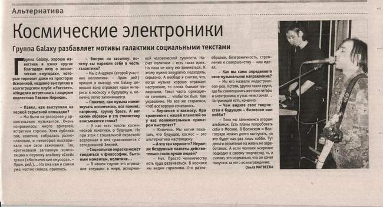

Группа GalaxY разбавляет мотивы галактики социальными текстами
Группа GalaxY, хорошо известная в узких кругах благодаря хиту о космических «мусорах», которые тормозят даже на просторах Вселенной, недавно выступила в волгоградском клубе «Рассвет». «Неделя» встретилась с лидером коллектива Павлом Нериком. 
— Павел, как выступили на первой серьёзной площадке?
— Мы были на разогреве у архангельских музыкантов. Очень понравилось: много зрителей, встретили хорошо. Хотя публика там, конечно, собралась разноплановая, и некоторые высказывали нам свои замечания. Так, критиковали заглавную композицию к первому альбому «Спейс трэш» («Космические «мусора». — Прим. ред.)... Но она нам и самим уже, честно говоря, приелась.
— Вопрос на засыпку: почему вы нарекли себя в честь галактики?
— Мы с Андреем (второй участник коллектива. — Прим. Ред.) пришли к выводу, что GalaxY довольно ясно отражает наши интересы к космосу и будущему и, конечно, легко запоминается.
— Понятно, как музыка может звучать космически, все помнят, например, группу Space. А вот каким образом в эту стилистику вписываются слова?
— У нас есть тексты космической тематики, о будущем. Но при этом с социальной окраской: вселенная в них сравнивается с сегодняшней Землёй.
— Социальная окраска может сводиться к философии, бытовым моментам, политике...
— В нашем случае это отрицание ситуации в мире, испорченной человеческой сущности. Насчёт политики — есть такая идея. Но пока не хочу ею заниматься. К этому нужно аккуратно подходить, серьёзно. А вообще я считаю, что, когда музыка хорошо отражает настроение, то слова бывают излишними. Текст часто приходиться сочинять... чтобы он был. Как украшение. Но всё же стараемся, чтоб всё хорошо сочеталось.
— Вернёмся к космосу. При сравнении с нашей планетой он у вас положительным примером выступает?
— Конечно. Мы хотим показать, что будущее, космос — это альтернатива настоящему.
— А что там хорошего? Неужели бездушные планеты действительно стали лучше людей?
— Нет. Просто человечеству есть куда развиваться. В космосе мы видим гармонию. Его разнообразие, безграничность, стремление к совершнству — наш идеал.
— Как вы сами определяете своё музыкальное направление?
— Мы его назвали индастриал-поп-рок. Кстати, других таких групп, где бы совмещались жёсткие гитары и электроника, я у нас не встречал... За границей есть, конечно.
— Чем видите своё творчество в будущем — бизнесом или хобби?
— Пока мы занимаемся вторым альбомом. Есть планы попробовать себя в Москве. В Волжском и Волгограде можно долго выступать, но это будет как раз хобби. Тут деньги серьёзные не заработаешь. А если человек искренне подходит к своему творчеству, то, я считаю, что он хочет получать за него вознаграждение.
Ольга МАТВЕЕВА